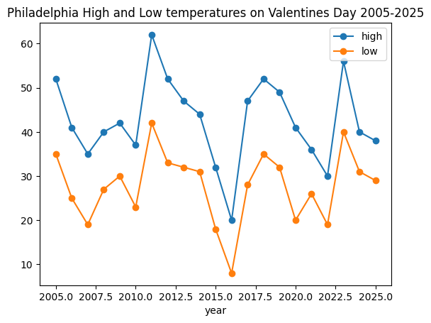

import pandas as pd
import numpy as np
import matplotlib.pyplot as pltPhiladelphia Weather on Valentine’s Day from the Past 20 Years
Records from 2005-2025
weather_df = pd.read_csv('data/philadelphia_weather_2005_to_2025.csv')
weather_df = weather_df.assign(date=pd.to_datetime(weather_df['date']))valentines_weather = weather_df[ (weather_df['date'].dt.month == 2) & (weather_df['date'].dt.day == 14) ]
valentines_weather| day | year | high | low | rain | snow | date | day_num | month_num | dow | dow_name | month | |
|---|---|---|---|---|---|---|---|---|---|---|---|---|
| 44 | February 14 | 2005 | 52 | 35 | 0.97 | 0.0 | 2005-02-14 | 14 | 2 | 0 | Monday | February |
| 409 | February 14 | 2006 | 41 | 25 | 0.00 | 0.0 | 2006-02-14 | 14 | 2 | 1 | Tuesday | February |
| 774 | February 14 | 2007 | 35 | 19 | 0.59 | 1.4 | 2007-02-14 | 14 | 2 | 2 | Wednesday | February |
| 1139 | February 14 | 2008 | 40 | 27 | 0.00 | 0.0 | 2008-02-14 | 14 | 2 | 3 | Thursday | February |
| 1505 | February 14 | 2009 | 42 | 30 | 0.00 | 0.0 | 2009-02-14 | 14 | 2 | 5 | Saturday | February |
| 1870 | February 14 | 2010 | 37 | 23 | 0.00 | 0.0 | 2010-02-14 | 14 | 2 | 6 | Sunday | February |
| 2235 | February 14 | 2011 | 62 | 42 | 0.00 | 0.0 | 2011-02-14 | 14 | 2 | 0 | Monday | February |
| 2600 | February 14 | 2012 | 52 | 33 | 0.00 | 0.0 | 2012-02-14 | 14 | 2 | 1 | Tuesday | February |
| 2966 | February 14 | 2013 | 47 | 32 | 0.00 | 0.0 | 2013-02-14 | 14 | 2 | 3 | Thursday | February |
| 3331 | February 14 | 2014 | 44 | 31 | 0.21 | 0.7 | 2014-02-14 | 14 | 2 | 4 | Friday | February |
| 3696 | February 14 | 2015 | 32 | 18 | 0.04 | 1.3 | 2015-02-14 | 14 | 2 | 5 | Saturday | February |
| 4061 | February 14 | 2016 | 20 | 8 | 0.00 | 0.0 | 2016-02-14 | 14 | 2 | 6 | Sunday | February |
| 4427 | February 14 | 2017 | 47 | 28 | 0.00 | 0.0 | 2017-02-14 | 14 | 2 | 1 | Tuesday | February |
| 4792 | February 14 | 2018 | 52 | 35 | 0.05 | 0.0 | 2018-02-14 | 14 | 2 | 2 | Wednesday | February |
| 5157 | February 14 | 2019 | 49 | 32 | 0.00 | 0.0 | 2019-02-14 | 14 | 2 | 3 | Thursday | February |
| 5522 | February 14 | 2020 | 41 | 20 | 0.00 | 0.0 | 2020-02-14 | 14 | 2 | 4 | Friday | February |
| 5888 | February 14 | 2021 | 36 | 26 | 0.00 | 0.0 | 2021-02-14 | 14 | 2 | 6 | Sunday | February |
| 6253 | February 14 | 2022 | 30 | 19 | 0.00 | 0.0 | 2022-02-14 | 14 | 2 | 0 | Monday | February |
| 6618 | February 14 | 2023 | 56 | 40 | 0.00 | 0.0 | 2023-02-14 | 14 | 2 | 1 | Tuesday | February |
| 6983 | February 14 | 2024 | 40 | 31 | 0.00 | 0.0 | 2024-02-14 | 14 | 2 | 2 | Wednesday | February |
| 7349 | February 14 | 2025 | 38 | 29 | 0.00 | 0.0 | 2025-02-14 | 14 | 2 | 4 | Friday | February |
valentines_weather['high']
valentines_high = valentines_weather['high']
valentines_high44 52
409 41
774 35
1139 40
1505 42
1870 37
2235 62
2600 52
2966 47
3331 44
3696 32
4061 20
4427 47
4792 52
5157 49
5522 41
5888 36
6253 30
6618 56
6983 40
7349 38
Name: high, dtype: int64valentines_high['date'] = pd.to_datetime(valentines_high['date'])
valentines_high['date']44 2005-02-14
409 2006-02-14
774 2007-02-14
1139 2008-02-14
1505 2009-02-14
1870 2010-02-14
2235 2011-02-14
2600 2012-02-14
2966 2013-02-14
3331 2014-02-14
3696 2015-02-14
4061 2016-02-14
4427 2017-02-14
4792 2018-02-14
5157 2019-02-14
5522 2020-02-14
5888 2021-02-14
6253 2022-02-14
6618 2023-02-14
6983 2024-02-14
7349 2025-02-14
Name: date, dtype: datetime64[us]valentines_high['year'] = valentines_high['date'].dt.year
valentines_high['year']44 2005
409 2006
774 2007
1139 2008
1505 2009
1870 2010
2235 2011
2600 2012
2966 2013
3331 2014
3696 2015
4061 2016
4427 2017
4792 2018
5157 2019
5522 2020
5888 2021
6253 2022
6618 2023
6983 2024
7349 2025
Name: date, dtype: int32valentines_weather.query("day=='February 14'")| day | year | high | low | rain | snow | date | day_num | month_num | dow | dow_name | month | |
|---|---|---|---|---|---|---|---|---|---|---|---|---|
| 44 | February 14 | 2005 | 52 | 35 | 0.97 | 0.0 | 2005-02-14 | 14 | 2 | 0 | Monday | February |
| 409 | February 14 | 2006 | 41 | 25 | 0.00 | 0.0 | 2006-02-14 | 14 | 2 | 1 | Tuesday | February |
| 774 | February 14 | 2007 | 35 | 19 | 0.59 | 1.4 | 2007-02-14 | 14 | 2 | 2 | Wednesday | February |
| 1139 | February 14 | 2008 | 40 | 27 | 0.00 | 0.0 | 2008-02-14 | 14 | 2 | 3 | Thursday | February |
| 1505 | February 14 | 2009 | 42 | 30 | 0.00 | 0.0 | 2009-02-14 | 14 | 2 | 5 | Saturday | February |
| 1870 | February 14 | 2010 | 37 | 23 | 0.00 | 0.0 | 2010-02-14 | 14 | 2 | 6 | Sunday | February |
| 2235 | February 14 | 2011 | 62 | 42 | 0.00 | 0.0 | 2011-02-14 | 14 | 2 | 0 | Monday | February |
| 2600 | February 14 | 2012 | 52 | 33 | 0.00 | 0.0 | 2012-02-14 | 14 | 2 | 1 | Tuesday | February |
| 2966 | February 14 | 2013 | 47 | 32 | 0.00 | 0.0 | 2013-02-14 | 14 | 2 | 3 | Thursday | February |
| 3331 | February 14 | 2014 | 44 | 31 | 0.21 | 0.7 | 2014-02-14 | 14 | 2 | 4 | Friday | February |
| 3696 | February 14 | 2015 | 32 | 18 | 0.04 | 1.3 | 2015-02-14 | 14 | 2 | 5 | Saturday | February |
| 4061 | February 14 | 2016 | 20 | 8 | 0.00 | 0.0 | 2016-02-14 | 14 | 2 | 6 | Sunday | February |
| 4427 | February 14 | 2017 | 47 | 28 | 0.00 | 0.0 | 2017-02-14 | 14 | 2 | 1 | Tuesday | February |
| 4792 | February 14 | 2018 | 52 | 35 | 0.05 | 0.0 | 2018-02-14 | 14 | 2 | 2 | Wednesday | February |
| 5157 | February 14 | 2019 | 49 | 32 | 0.00 | 0.0 | 2019-02-14 | 14 | 2 | 3 | Thursday | February |
| 5522 | February 14 | 2020 | 41 | 20 | 0.00 | 0.0 | 2020-02-14 | 14 | 2 | 4 | Friday | February |
| 5888 | February 14 | 2021 | 36 | 26 | 0.00 | 0.0 | 2021-02-14 | 14 | 2 | 6 | Sunday | February |
| 6253 | February 14 | 2022 | 30 | 19 | 0.00 | 0.0 | 2022-02-14 | 14 | 2 | 0 | Monday | February |
| 6618 | February 14 | 2023 | 56 | 40 | 0.00 | 0.0 | 2023-02-14 | 14 | 2 | 1 | Tuesday | February |
| 6983 | February 14 | 2024 | 40 | 31 | 0.00 | 0.0 | 2024-02-14 | 14 | 2 | 2 | Wednesday | February |
| 7349 | February 14 | 2025 | 38 | 29 | 0.00 | 0.0 | 2025-02-14 | 14 | 2 | 4 | Friday | February |
valentines_weather.query("day=='February 14'").set_index('year')[['high','low']]
val_high_low = valentines_weather.query("day=='February 14'").set_index('year')[['high','low']]
val_high_low| high | low | |
|---|---|---|
| year | ||
| 2005 | 52 | 35 |
| 2006 | 41 | 25 |
| 2007 | 35 | 19 |
| 2008 | 40 | 27 |
| 2009 | 42 | 30 |
| 2010 | 37 | 23 |
| 2011 | 62 | 42 |
| 2012 | 52 | 33 |
| 2013 | 47 | 32 |
| 2014 | 44 | 31 |
| 2015 | 32 | 18 |
| 2016 | 20 | 8 |
| 2017 | 47 | 28 |
| 2018 | 52 | 35 |
| 2019 | 49 | 32 |
| 2020 | 41 | 20 |
| 2021 | 36 | 26 |
| 2022 | 30 | 19 |
| 2023 | 56 | 40 |
| 2024 | 40 | 31 |
| 2025 | 38 | 29 |
val_high_low.plot(kind='line', style='-o')
plt.title('Philadelphia High and Low temperatures on Valentines Day 2005-2025')
plt.show()
warmest_valentines = valentines_weather['high'].max()
warmest_valentinesnp.int64(62)max_idx = valentines_weather['high'].idxmax()
valentines_weather.loc[max_idx]day February 14
year 2011
high 62
low 42
rain 0.0
snow 0.0
date 2011-02-14 00:00:00
day_num 14
month_num 2
dow 0
dow_name Monday
month February
Name: 2235, dtype: objectThe highest temperature over the past 20 years on Valentine’s day was in 2011, reaching 62 degrees.
coldest_valentines = valentines_weather['low'].min()
coldest_valentinesnp.int64(8)min_idx = valentines_weather['low'].idxmin()
valentines_weather.loc[min_idx]day February 14
year 2016
high 20
low 8
rain 0.0
snow 0.0
date 2016-02-14 00:00:00
day_num 14
month_num 2
dow 6
dow_name Sunday
month February
Name: 4061, dtype: objectThe lowest temperature over the past 20 years on Valentine’s day was in 2016, reaching only 20 degrees.
is_rain = valentines_weather['rain']>0
is_rain.sum()np.int64(5)There were 5 Valentine’s days in the past 20 years where there was rain.
prob_rain = (valentines_weather['rain']>0).mean()
prob_rain*100np.float64(23.809523809523807)print(f"The probability of rain on Valentine's Day: {prob_rain:.23%}")The probability of rain on Valentine's Day: 23.80952380952380664780321%is_snow = valentines_weather['snow']>0
is_snow.sum()np.int64(3)There were 3 Valentine’s days in the past 20 years where there was snow.
prob_snow = (valentines_weather['snow']>0).mean()
prob_snow*100np.float64(14.285714285714285)print(f"The probability of snow on Valentine's Day: {prob_snow:.14%}")The probability of snow on Valentine's Day: 14.28571428571428%Conclusion
Overall, there’s been a variety of temperatures in Philadelphia on Valentine’s Day, ranging from a high of 62 degrees to a high of 20 degrees. With that, there’s a variety of activities to do rain, snow, or shine with loved ones, friends, and family! * For a higher temperature Valentine’s Day, you can take a nice stroll through Rittenhouse! * For a lower temperature Valentine’s Day, you can bundle up or stay indoors, trying new cozy food spots!